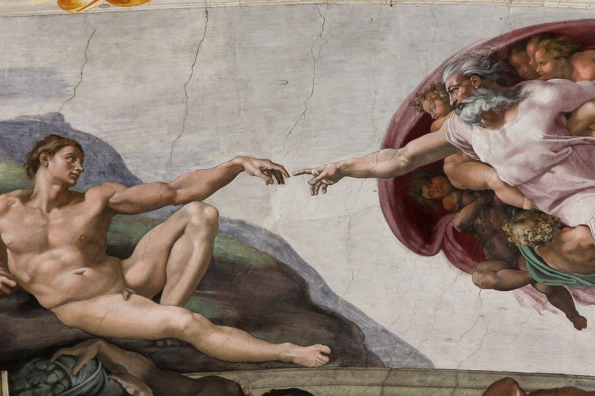
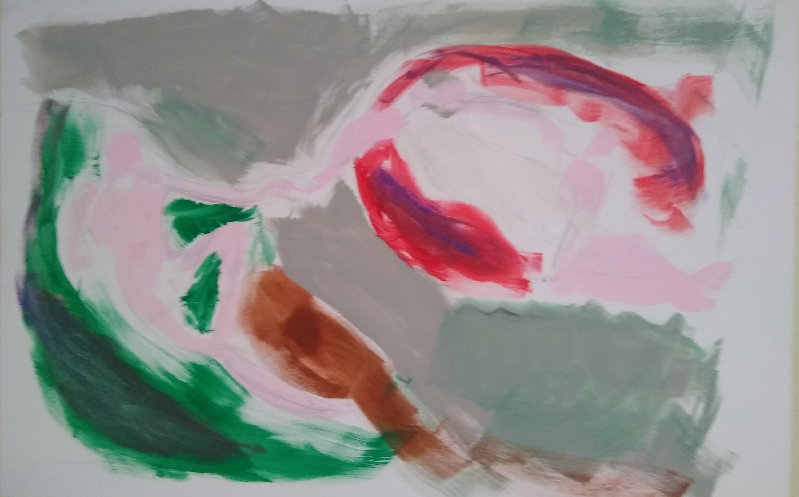

Hyper-realistic reproduction of The Creation of Adam
“[His] method was to be relatively simple: Learn Spanish, return to Catholicism, fight against the Moor or Turk, forget the history of Europe from 1602 to 1918 - be Miguel de Cervantes.” - Pierre Menard, Author of the Quixote (Borges)


I painted this while lying on my back.